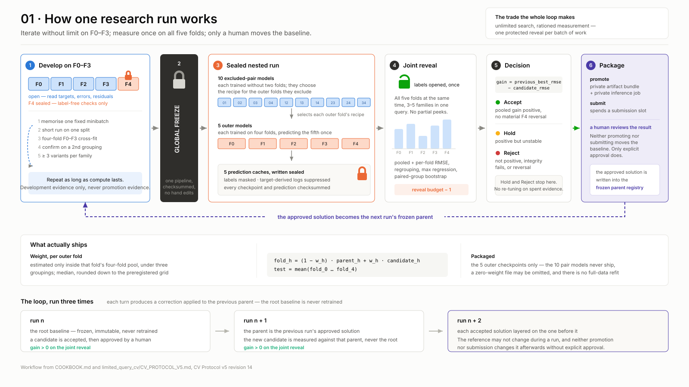
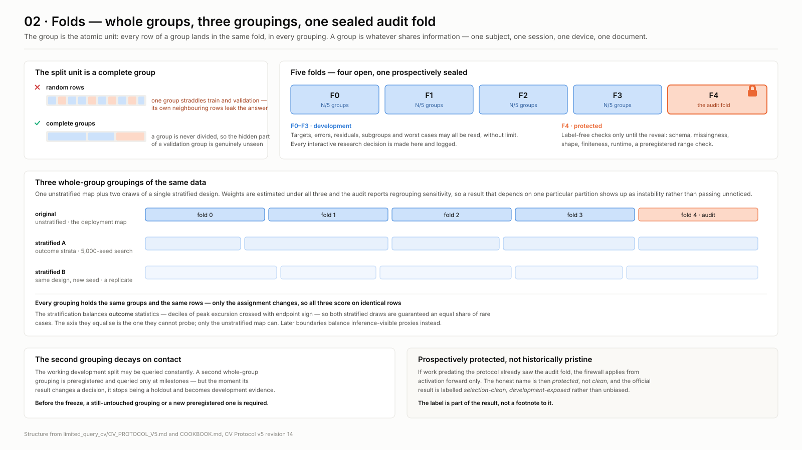
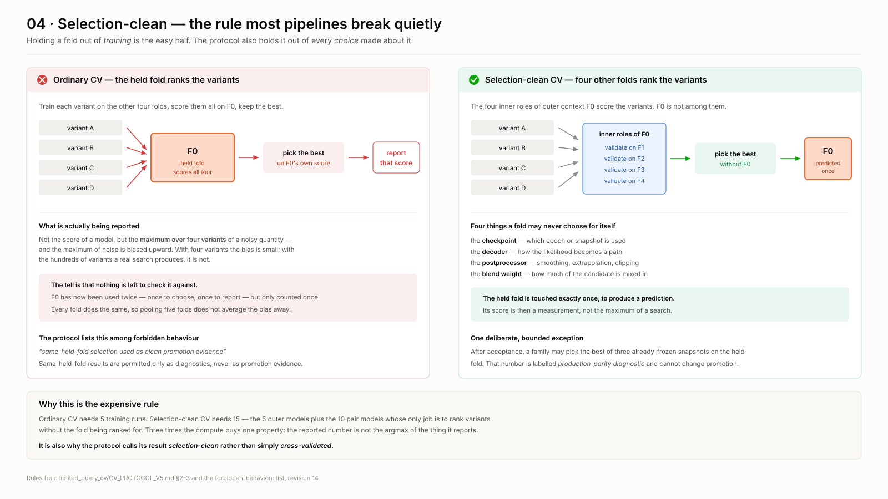
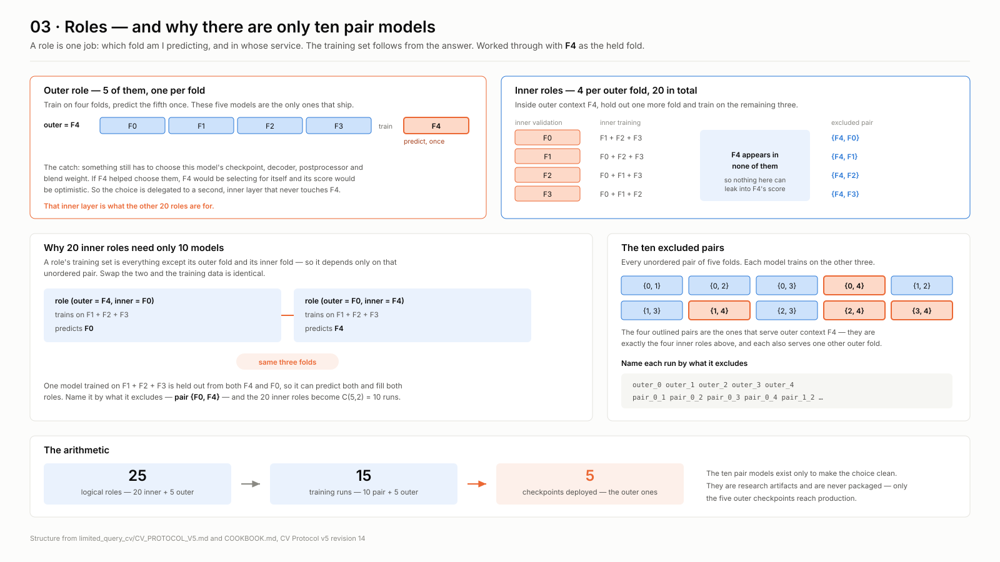
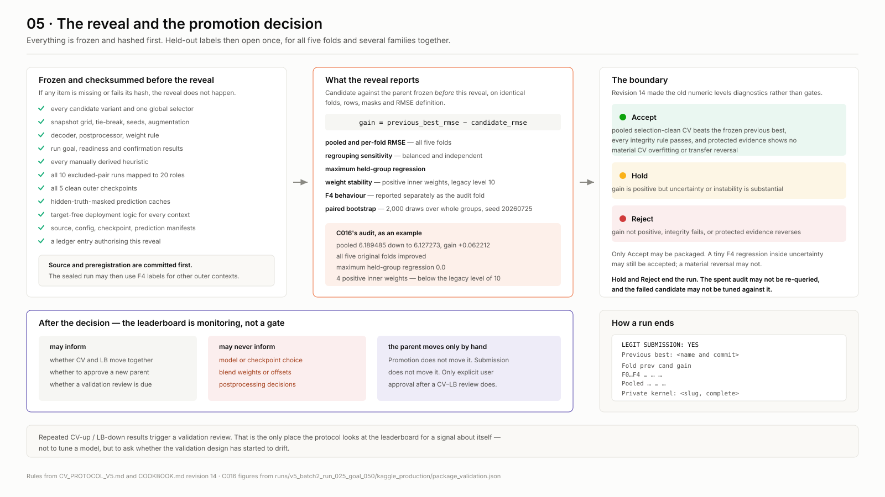
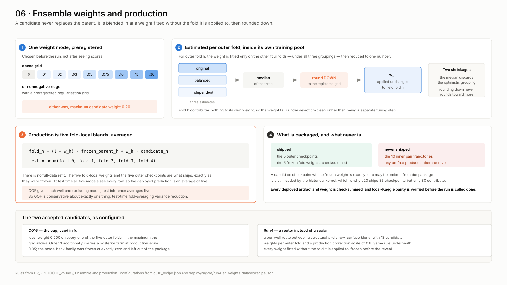
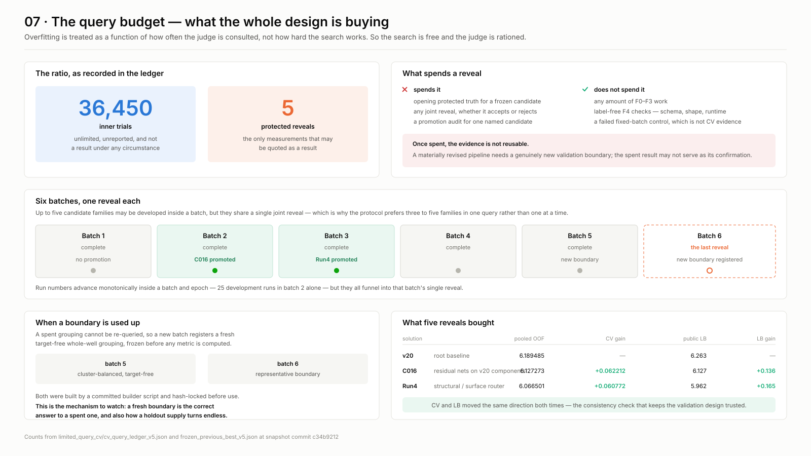

A validation strategy for research where the search is automated — designed so that thousands of experiments can run freely without the reported number quietly becoming a lie.
How it works, step by step, and why each step is there
Cross-validation is safe when you run it once. It stops being safe the moment you use it to choose.
Train four variants, score them all on the held fold, keep the best, report that score.
The number you report is no longer the score of a model. It is the maximum over variants of a noisy quantity — and the maximum of noise is biased upward.
With four variants the bias is small. With the hundreds an automated search produces, it is not.
The held fold was used twice — once to choose, once to report — but counted once.
Every fold does the same thing, so pooling five folds does not average the bias away. It pools five biased estimates.
And nothing is left over to detect it with: the evidence that would reveal the optimism is the same evidence that was consumed making it.
Overfitting is treated as a function of how often the judge is consulted, not how hard the search works. So the search is made free and the judge is made scarce.
Explore, inspect errors, tune anything on the development folds. Nothing here is a result, so nothing here can be overfitted to.
One protected reveal per batch of work. Opening it spends it, and a spent result cannot be reused as confirmation.
No automatic gate moves the baseline. A person reviews the result and approves it, or it does not move.

The unit is whatever shares information — one subject, one session, one device, one document, one well. Every row of a group lands in the same fold.
Split rows at random and one group straddles train and validation. The model then predicts a row using its own neighbouring rows, which is a leak no metric will show you.
Five folds. Four are open for development. The fifth is sealed as the audit fold.
The same groups partitioned three different ways — original, balanced, independent. Identical rows, different assignment.
Weights are estimated under all three, and the audit reports regrouping sensitivity. A result that only holds under one particular partition shows up as instability instead of passing unnoticed.

On the development folds the agent may read targets, errors, residuals, subgroups and worst cases, and may change architecture, loss, features, augmentation, postprocessing and ensembling. There is no budget.
The protocol pushes harder, not softer: abandoning a mechanism after one or two weak variants is listed as forbidden behaviour, and a trainable family is expected to test at least three meaningful variants.
Debugging costs nothing statistically. A family must first memorise one fixed batch. Failure there is an implementation result, never CV evidence — so fixing bugs never spends measurement budget.
Holdouts decay on contact. The second grouping is queried only at milestones, and the moment its result changes a decision it is reclassified as development evidence. Before the freeze, a still-untouched grouping is required.
Holding a fold out of training is the easy half. The protocol also holds it out of every choice made about it.
Same-held-fold results are permitted as diagnostics. They are never promotion evidence.
Inside the four folds that remain, run a second cross-validation. Hold out one more fold, train on the rest, score the variants there.
Four such readings per outer fold, none of which ever touched it. The winner is applied to the held fold once, to produce one prediction.
Its score is then a measurement, not the maximum of a search.

A role is one job: which fold am I predicting, and in whose service. The training set follows from the answer.
A role trains on everything except its outer fold and its inner fold — so its data depends only on that unordered pair. Swap the two and the training set is identical.
That single model is held out from both F0 and F4, so it predicts both and fills both roles. Name it by what it excludes — pair {0,4}
Distinct pairs of five folds: C(5,2) = 10. So 20 inner roles need only 10 models.
| plain (leaky) CV | 5 runs |
| independent nesting | 25 runs |
| pair-shared nesting | 15 runs |
Three times plain CV, not five. Valid only with identical config and seed — the sharing is bookkeeping, not statistics.

Everything that could be adjusted in response to a result is fixed and hashed first. The same automatic procedure then runs for every outer fold, with no hand edits and no fold-specific fallback.
The selector is fixed. What it selects may legitimately differ per outer fold, because each fold's selector sees a different four-fifths of the data.
Observed in one accepted candidate: the same frozen rule chose decoding temperature 2.0, 2.0, 1.5, 1.5, 1.5 across the five outer folds, and double amplitude on the last one. Nobody chose those by hand.
Every component needs a target-free implementation for every outer context. If one is missing, it is either generated for all of them or removed uniformly and the pipeline re-frozen — never patched for a single fold.
The 10 pair models train first and rank the variants for each outer context. Then the 5 outer models train on four folds each and predict their held fold once.
The run writes checkpoints, prediction caches and manifests — all checksummed, all with truth masked and target-derived logs suppressed until every artifact is complete.
Pair-sharing means the audit fold's labels are legitimately used mid-run — pair {0,4} serves outer context F0 by validating on F4. Legal, because outer context F0 is entitled to use F4. But it means truth is touched before the reveal, so the seal is what keeps that from reaching a human decision.
Snapshots are saved on a preregistered epoch grid, and each writes its prediction immediately. Everything else is swept afterwards on those saved predictions — no retraining.
This is why 15 runs suffices. The inner layer is not ranking 225 trained models; it is ranking 225 readings of 10 trained models.
Things that genuinely need retraining — architecture, loss, seed — are frozen beforehand or multiply the run count.
Protected truth opens for every fold simultaneously, with three to five distinct families in the same query — so the best of many queries can never be presented as an unbiased result.
Compared against the parent frozen before this reveal, on identical folds, rows, masks and metric definition. The reference may not change during the run.
reveal budget − 1
A revised pipeline needs a genuinely new boundary. A spent result may never serve as its own confirmation.

Pooled selection-clean CV beats the frozen parent, every integrity rule passes, and protected evidence shows no material overfitting or transfer reversal.
Gain is positive but uncertainty or instability is substantial. Nothing is packaged.
Gain is not positive, integrity fails, or the protected evidence materially reverses the development result.
Revision 14 demoted the old thresholds — +0.03 pooled, 4 of 5 folds improved, bootstrap 0.80 — from automatic cutoffs to evidence. A hard threshold is itself a target to optimise against; removing it removes the thing to game.
The spent audit may not be re-queried, and the failed candidate may not be tuned against it. The rejection is preserved rather than rewritten — sealed history is never edited after the fact.
The quantity on trial is not the candidate's own error. It is what the candidate adds to the parent that already exists.
Promotion evaluates incremental cross-fitted contribution to the frozen parent ensemble — explicitly not standalone error alone. So a model that is weaker on its own but decorrelated can beat one that is stronger on its own but redundant.
That is ordinary ensemble theory. The protocol’s contribution is to make it the acceptance criterion rather than a modelling tactic.
The worry is obvious: make the blend weight a free knob and turn noise into signal. Four things close it.
Both outcomes have occurred. One accepted generation was exactly this shape — residual corrections that are meaningless standalone, blended at weight 0.2. In the same run another family reached the audit, was assigned exactly 0.0, and was excluded from the package by arithmetic rather than argument.
For each outer fold, the weight is estimated only inside that fold's own four-fold pool, under all three groupings. Take the median, round down to a nine-point grid, cap at 0.20, apply unchanged to the held fold.
No full-data refit. The five fold-local weights and five outer checkpoints are what ships.
One weight per fold is still one free parameter. What changed is how far it may travel: nine rungs, biased downward, with the most optimistic of three estimates discarded by the median.
And the five fold checkpoints are averaged with equal weight — zero free parameters.
Not modesty: there is no clean evidence with which to fit them. Out-of-fold gives each group exactly one excluding model, so the five-model average never appears in the record. The structure that makes those weights unfittable removes the temptation to fit them.

Promotion builds the private artifact bundle and inference job. Submission spends a submission slot. Neither changes the parent.
The parent registry is updated only by explicit approval after a person reviews whether the clean CV gain and the external score moved together.
External feedback may never inform model choice, blend weights, or postprocessing. It is monitoring evidence about the validation design, not a signal about the model.
Repeated CV-up / score-down triggers a validation review — the one place the protocol looks at the leaderboard to ask a question about itself.
Every other decision in the protocol is automatic, precisely so it cannot be nudged. This one is manual for the opposite reason.
Approving a new parent is the only irreversible act: it changes the reference every future run is measured against. A rule that did it automatically would let a single lucky reveal reset the baseline permanently — and a chain of lucky reveals would drift without any single step looking wrong.
Promotion and submission are reversible. Moving the baseline is not, so it is the one thing a person signs.

Six choices, each answering a different way the number could quietly become wrong.
Unlimited search on one side, a sealed measurement on the other. Overfitting is localised to the side where nothing is claimed.
No fold selects for itself. The reported number is a measurement, not the argmax of the search that produced it.
Opening a reveal consumes it. A revised pipeline needs a new boundary, so evidence cannot be re-queried until it agrees.
Coarse grids, rounding down, medians over groupings, hard caps. Parameters keep their count but lose their resolution.
No fixed numeric threshold to optimise against — judgement over a full evidence panel instead of a single passing score.
Everything automatic except the one irreversible act, which is where accountability matters more than consistency.
| generation | what it added | pooled CV | CV gain | external | gain |
|---|---|---|---|---|---|
| root | the immutable baseline, never retrained | 6.189485 | — | 6.263 | — |
| gen 2 | residual networks on cached baseline components | 6.127273 | +0.062212 | 6.127 | +0.136 |
| gen 3 | a per-group router over two candidate blends | 6.066501 | +0.060772 | 5.962 | +0.165 |
Clean CV and the external score moved the same direction both times, and the external gain was larger than the CV gain each time. That is the signature of a validation design that is, if anything, conservative.
The budget is one reveal per batch, six batches, five spent. When a boundary is used up the escape valve is a fresh target-free grouping — legitimate, and also exactly how a holdout supply could become endless.
The audit fold is prospectively protected, not historically pristine, which is why the official result is labelled selection-clean, development-exposed rather than unbiased.